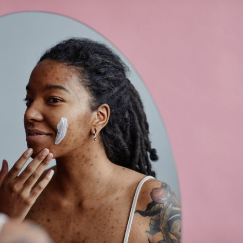
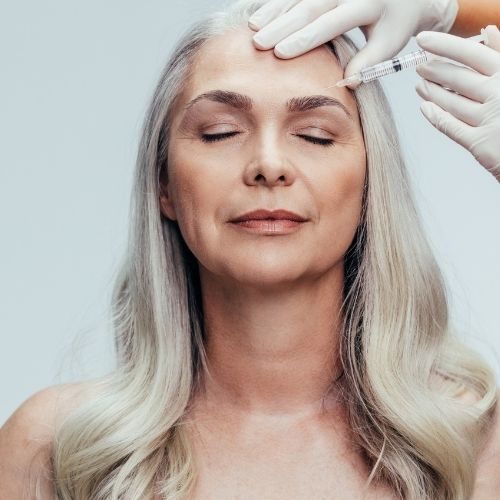
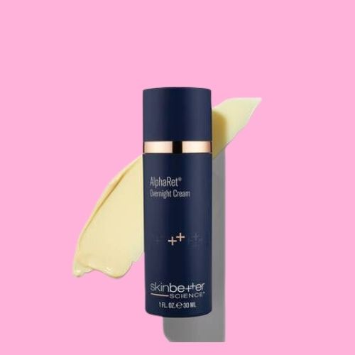
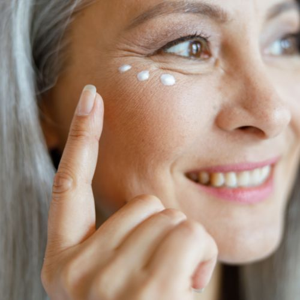
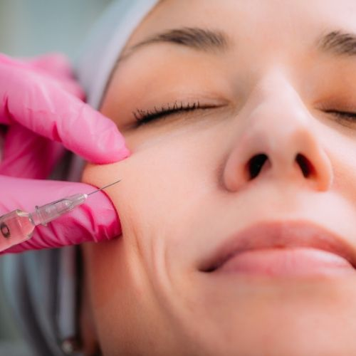

Luxury Skincare for women over 30
Hormonal changes can increase oil production in your skin, which can clog your pores. You might be more likely to get adult acne if you have polycystic ovary syndrome (PCOS) or use hormonal birth control.
Stress can also cause acne. High-stress levels increase cortisol in your body, leading to inflammation and breakouts. Mild acne breakouts usually resolve on their own. But if you are frustrated with significant acne or frequent breakouts in your 30s, it might be time to consider some other options.
HydraFacial is effective due to its deep cleaning and exfoliation properties. The treatment helps clogged pores by removing dead skin cells, and extracting impurities therefore helping with existing acne while preventing future breakouts and can even lighten acne scars. Adding acne-fighting serums during and after the facial, such as salicylic acid, helps maintain a healthy balance in the skin and reduce inflammation.
The main idea behind using Botox to treat acne is that it reduces the activity of the sebaceous glands, which are the glands responsible for producing sebum. Sebum is the natural oil produced by the skin and it can trap dirt and bacteria, which can lead to clogged pores and acne. By reducing the activity of the sebaceous glands, Botox can help reduce the production of sebum and therefore reduce the occurrence of acne.
Melasma is a common pigmentation disorder that causes darker patches on the skin, primarily on the face.
While melasma does not cause any other physical symptoms, some people may find the appearance of these patches bothersome. Potential triggers for melasma can include changes in hormones, sun exposure, certain skin care products, if they irritate a person’s skin, and some medications. Melasma that is due to hormonal changes may fade over time, once hormone levels return to normal. Taking steps to limit sun exposure may help prevent melasma.
Melasma and sun spots can be quite noticeable. Thankfully they aren't always forever. Laser skin resurfacing is a great way to target pigment in the skin and watch as it peels away!
Skincare products with hydroquinone and retinae are usually recommended after treatment to improve results.
We all get wrinkles as we get older. They're a normal part of aging.
Wrinkles fall into two categories: fine, surface lines and deeper furrows. If they bother you, or if you're looking to prevent them in the first place, there are things that can help.
With age, skin cells divide more slowly, and the skin's inner layer, called the dermis, begins to thin. That starts to undo skin's stretchiness and structure. Aging skin also starts to lose its ability to hold on to moisture. It makes less oil and is slower to heal. That all contributes to the wrinkling process.
Botox is one of the most popular and widely used treatments for facial wrinkles.
Dynamic wrinkles are the facial wrinkles caused by muscle movements when you smile, laugh, concentrate, squint, etc. The most common dynamic wrinkles are crow’s feet around the eyes, forehead lines, and frown lines between the eyebrows. Botox is primarily used to treat these dynamic wrinkles. Botox is a neuromodulator made of botulinum toxin, a component that temporarily paralyzes muscle activity. It blocks your nerves from communicating with the targeted muscles, thus reducing the appearance of dynamic wrinkles.
Facial fillers are substances injected into the skin to smooth wrinkles and make them less noticeable.
Skin is held tight and smooth by three critical components: collagen, hyaluronic acid, and elastin. These chemicals combine to create a firm, spongy meshwork under the skin surface. This elastic structure keeps the skin surface smooth and firm. With age, this meshwork slowly loses its strength. With weakness in the underlying support structure, the skin's surface no longer has its baby-skin smoothness.
Injecting cosmetic fillers helps fill the thinned-out meshwork. The fillers plump up the tissue underneath the skin, shrinking wrinkles. The skin becomes firmer, smoother, and younger-looking.
